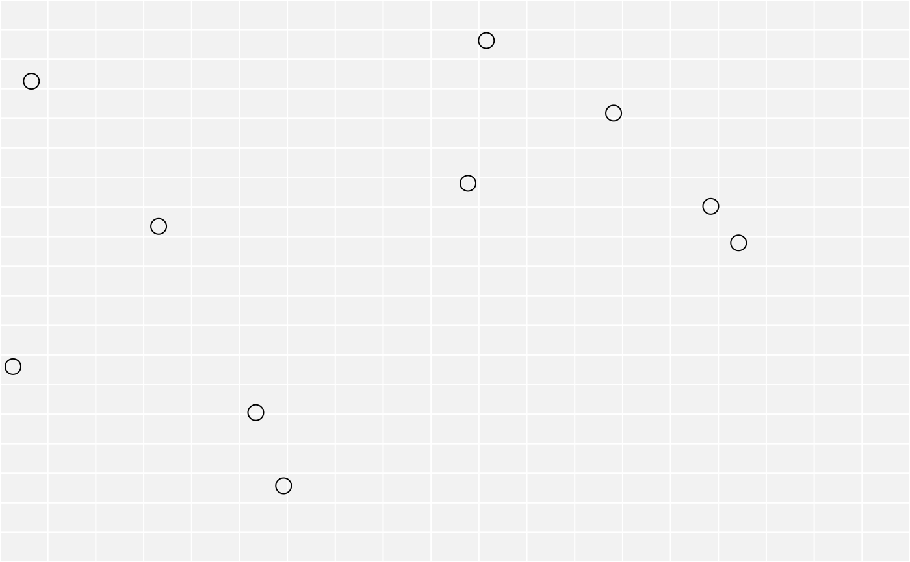

Add a single grob, possibly spanning multiple rows or columns.
Source:R/add-grob.R
gtable_add_grob.RdThis only adds grobs into the table - it doesn't affect the table layout in any way. In the gtable model, grobs always fill up the complete table cell. If you want custom justification you might need to define the grob dimension in absolute units, or put it into another gtable that can then be added to the gtable instead of the grob.
Arguments
- x
a
gtable()object- grobs
a single grob or a list of grobs
- t
a numeric vector giving the top extent of the grobs
- l
a numeric vector giving the left extent of the grobs
- b
a numeric vector giving the bottom extent of the grobs
- r
a numeric vector giving the right extent of the grobs
- z
a numeric vector giving the order in which the grobs should be plotted. Use
Inf(the default) to plot above or-Infbelow all existing grobs. By default positions are on the integers, giving plenty of room to insert new grobs between existing grobs.- clip
should drawing be clipped to the specified cells (
"on"), the entire table ("inherit"), or not at all ("off")- name
name of the grob - used to modify the grob name before it's plotted.
See also
Other gtable manipulation:
gtable_add_cols(),
gtable_add_padding(),
gtable_add_rows(),
gtable_add_space,
gtable_filter()
Examples
library(grid)
gt <- gtable(widths = unit(c(1, 1), 'null'), heights = unit(c(1, 1), 'null'))
pts <- pointsGrob(x = runif(5), y = runif(5))
# Add a grob to a single cell (top-right cell)
gt <- gtable_add_grob(gt, pts, t = 1, l = 2)
# Add a grob spanning multiple cells
gt <- gtable_add_grob(gt, pts, t = 1, l = 1, b = 2)
plot(gt)
